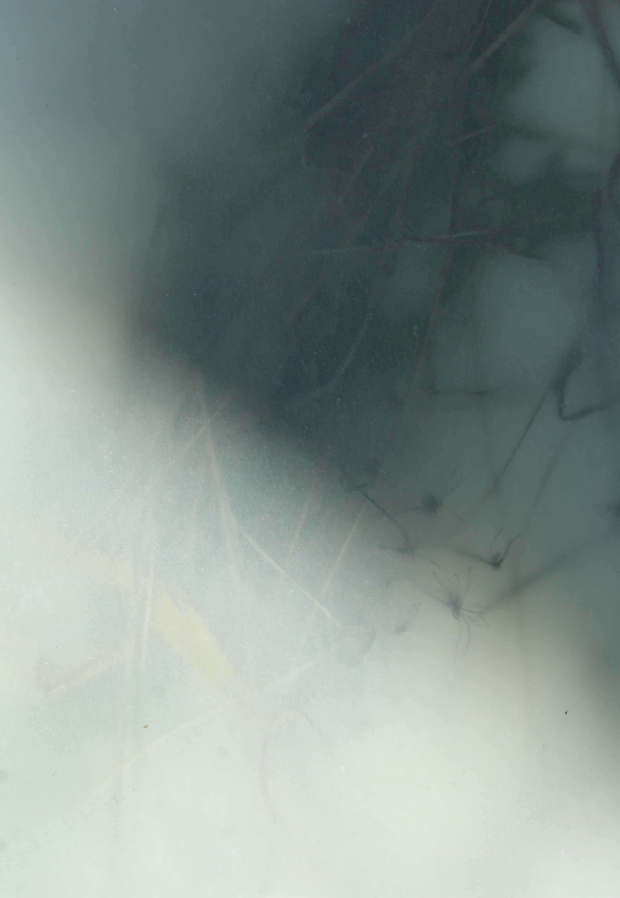
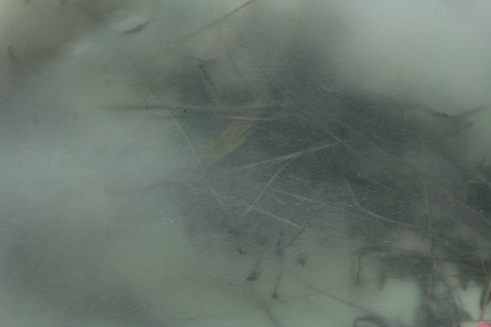
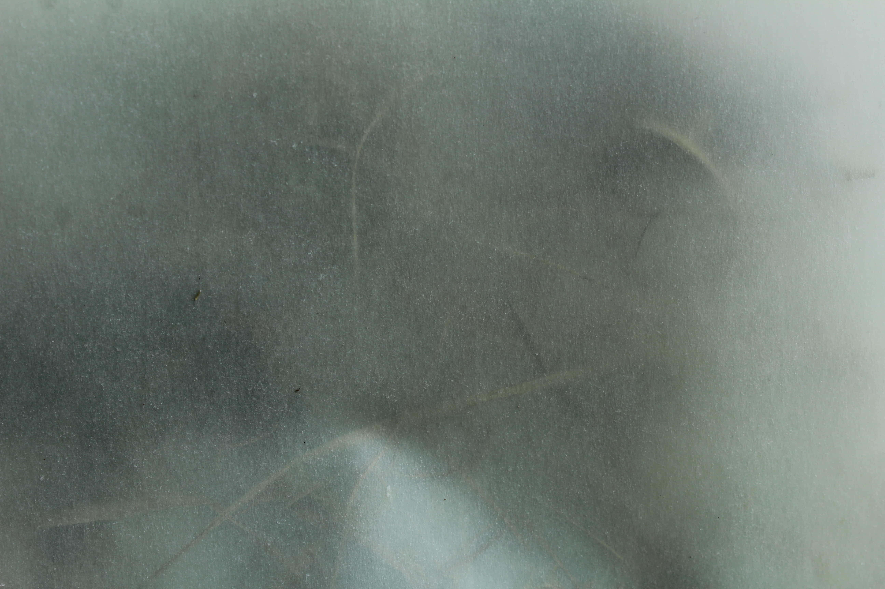
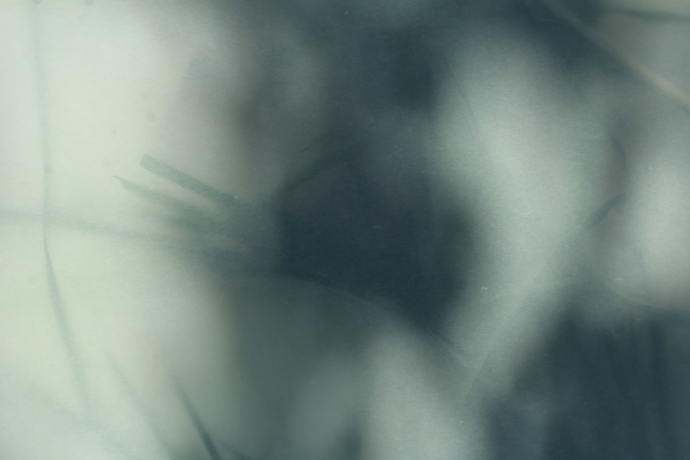
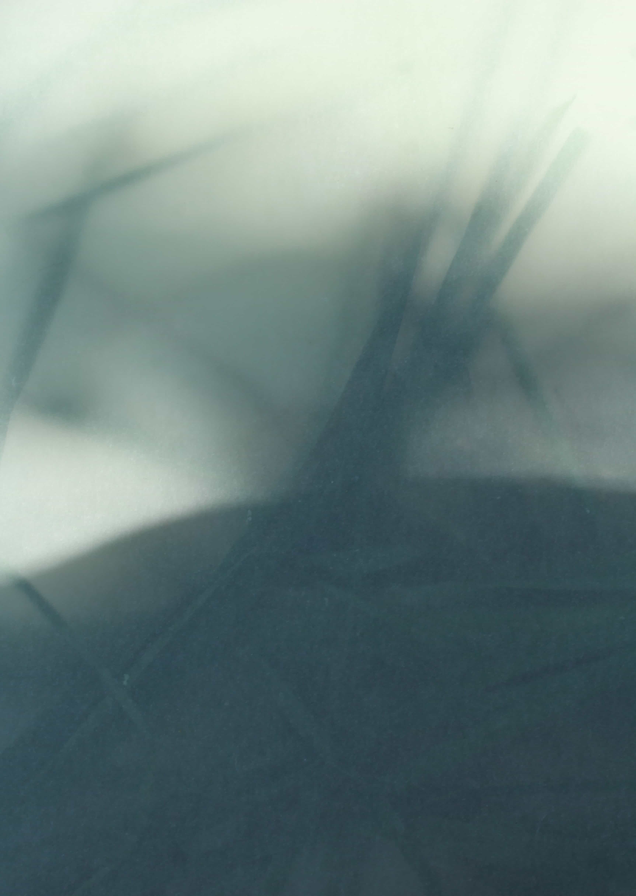
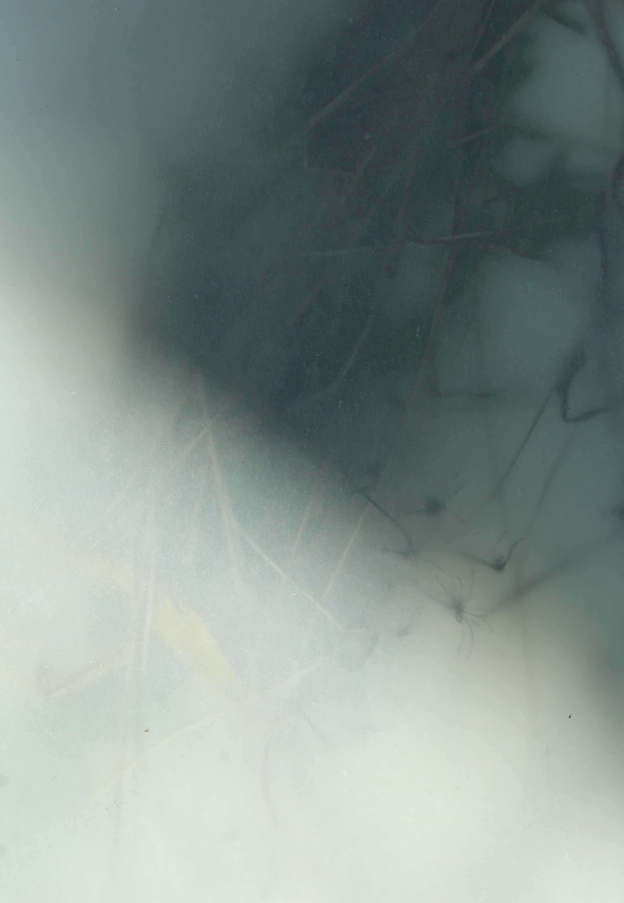
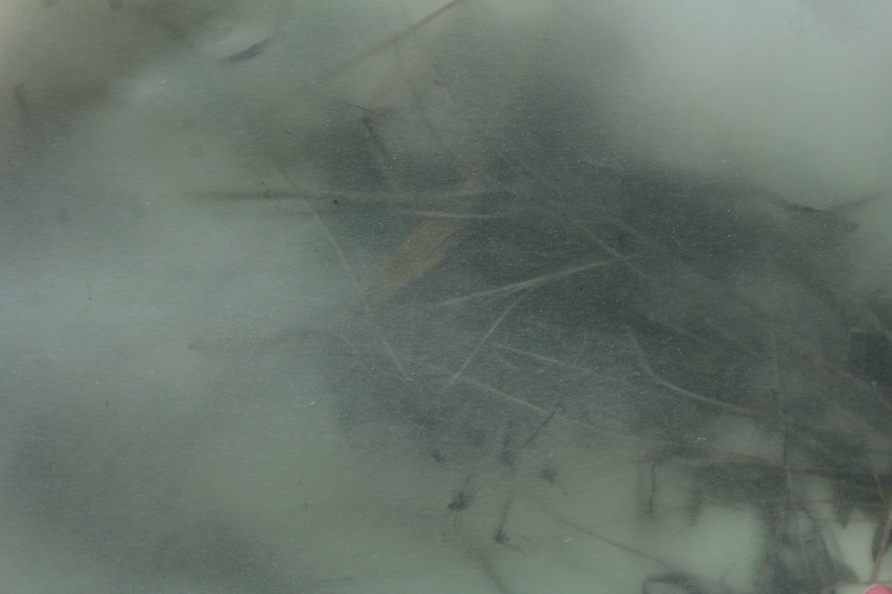
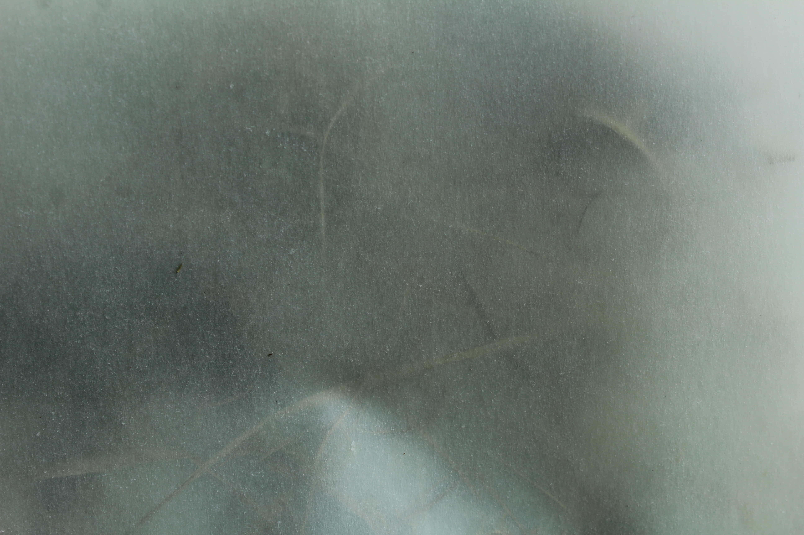
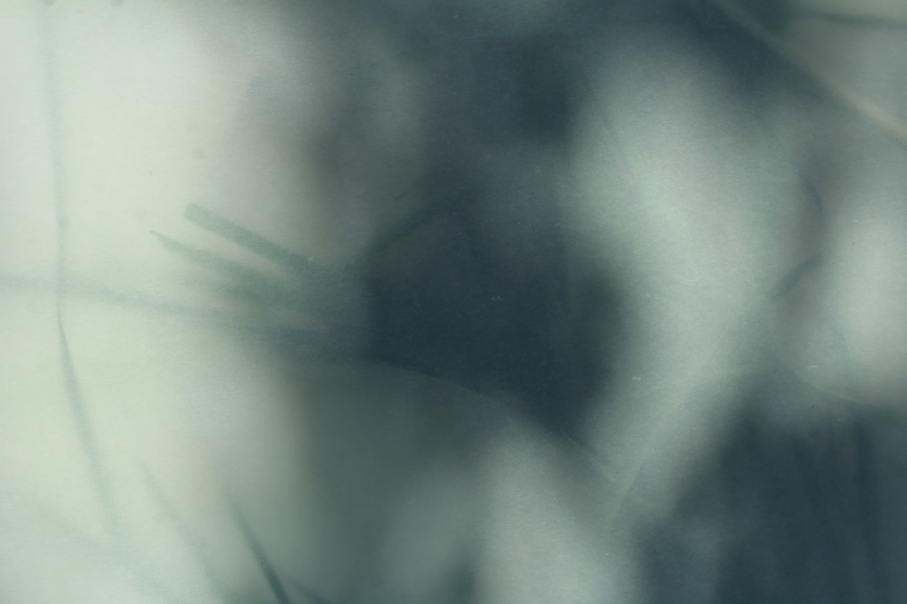
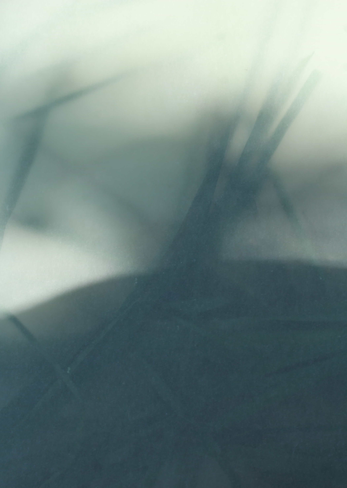

Nature 2020
 









fotografia, 1000 × 700 mm, 2020
Príroda sa počas obdobia pandémie stala mojím najväčším útočiskom. Strávila som tam veľmi veľa času. Sledovala
som svetlo, ktoré zmenilo dynamiku priestoru, zvuky a rastliny. Príroda sa stala mojou matricou. Podkladom pre
nové nápady a myšlienky. Z mojich ciest a prechádzok som si vždy niečo priniesla. Práve tieto nálezy, ako suché
trávy, kvety, konáre som začala vrstviť na seba a spájať ich dokopy. Bola to terapia, kedy som zabudla na to,
čo sa deje vo svete a vnímala som prítomný okamih. Svetlo, ktoré sa hralo alebo vietor, ktorý menil kompozíciu.
Vrstvením jednotlivý materiálov z rôznych lokalít vznikla jedna matrica, ktorá spája moje obľúbené miesta do
jedného obrazu.